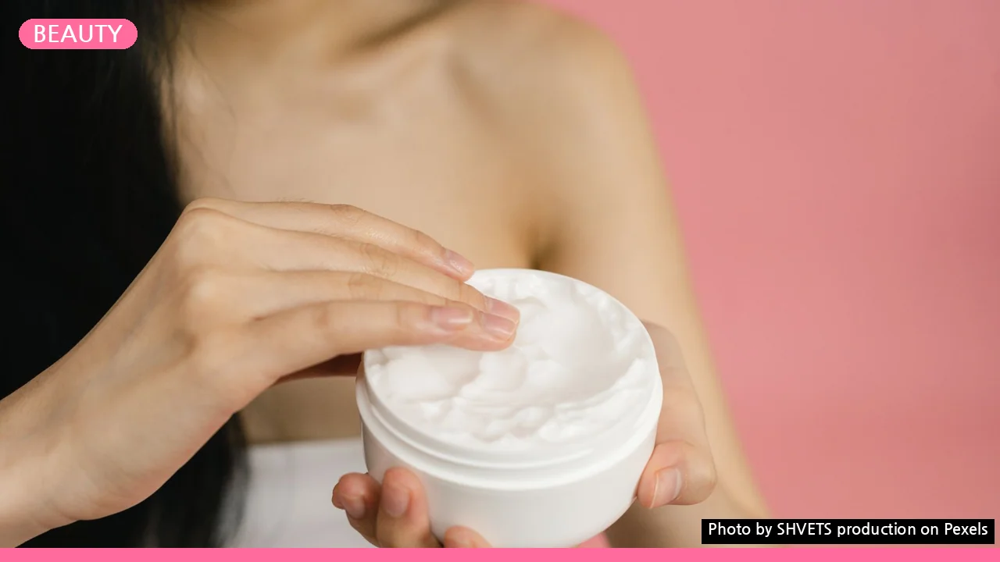
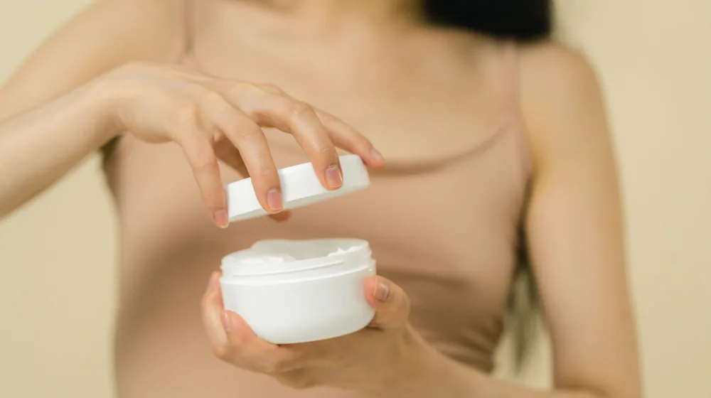
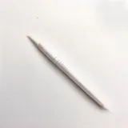

당기는 겨울 피부, 크림만 바르면 손해? 3단계 건조 탈출법
사진: SHVETS production / Pexels (무료 이미지, 출처 표기)
겨울철 피부가 유독 당기고 건조한 진짜 이유

겨울만 되면 얼굴이 당기고 뱀살처럼 하얗게 각질이 일어나 고민이신 분들이 많습니다. 비싼 수분 크림을 아무리 듬뿍 발라도 금방 건조해진다면, 피부 보습의 기본 방향이 잘못되었을 가능성이 큽니다.
겨울에는 기온과 함께 실내외 습도가 급격히 떨어집니다. 질병관리청 가이드에 따르면 겨울철 차갑고 건조한 바람은 피부 장벽을 약화시키고 수분 증발을 촉진하는 주된 원인입니다. 단순히 물을 많이 마시는 것만으로는 한계가 있으며, 피부 표면에서 수분이 빠져나가지 못하도록 장벽을 세우는 '밀폐 보습'에 집중해야 합니다.
내 피부 타입에 맞는 보습 성분 완벽 비교
화장품을 고를 때는 성분표를 먼저 확인하는 습관이 중요합니다. 보습 성분은 크게 수분을 끌어당기는 '습윤제'와 수분이 날아가지 않게 막아주는 '밀폐제'로 나뉩니다. 자신의 피부 타입에 맞는 성분을 선택해야 겉돌지 않고 속건조를 잡을 수 있습니다.
건조함을 극적으로 줄이는 겨울철 보습 3단계 루틴
겨울철 세안과 기초 케어는 피부에 자극을 주지 않으면서 신속하게 수분을 잠그는 것이 핵심입니다. 아래의 3단계 루틴을 매일 실천해 보세요.
- 미온수 세안과 약산성 세안제 사용: 뜨거운 물은 피부의 천연 기름막을 녹여 건조함을 극대화합니다. 미지근한 물로 세안하고, 거품이 풍성하게 나는 약산성 클렌저를 사용하여 자극을 최소화하세요.
- 세안 후 3분 이내 보습제 바르기: 세안 직후 물기가 완전히 마르기 전에 토너나 에센스를 발라야 합니다. 욕실에서 나오기 전 촉촉한 상태에서 첫 단계를 시작하는 것이 수분 골든타임을 지키는 비결입니다.
- 크림과 페이스 오일로 수분 잠금: 수분 크림을 바른 뒤 세라마이드나 판테놀(피부 진정과 장벽 회복을 돕는 비타민 B5 유도체)이 함유된 보습제를 레이어링하여 수분이 날아갈 구멍을 막아줍니다.
가습기만 틀면 끝? 실내 습도 조절 시 주의할 점
겨울철 적정 실내 습도는 40~60%입니다. 실내 습도를 올리기 위해 가습기를 자주 사용하지만, 잘못된 사용법은 오히려 피부를 더 건조하게 만듭니다.
가장 흔한 실수는 가습기 분무구를 얼굴로 향하게 두는 행동입니다. 차가운 수증기가 피부에 직접 닿으면 일시적으로는 촉촉하게 느껴질 수 있습니다. 하지만 이 수증기가 공기 중으로 증발하면서 피부가 원래 가지고 있던 수분까지 빼앗아 갑니다. 가습기는 몸에서 최소 1~2m 떨어진 곳에 두고 방 전체의 공기를 촉촉하게 만드는 용도로만 사용해야 안전합니다.
겨울철 피부 관리에 대해 자주 묻는 질문 (FAQ)
Q. 페이스 오일은 스킨케어 중 언제 발라야 하나요?
오일은 수분 증발을 막는 '밀폐막' 역할을 하므로 모든 스킨케어의 가장 마지막 단계에 바르는 것이 원칙입니다. 지성 피부라면 단독 사용보다는 기존에 쓰던 수분 크림에 1~2방울 섞어서 사용하는 것을 추천합니다.
Q. 겨울철에도 자외선 차단제를 꼭 발라야 하나요?
그렇습니다. 겨울철 자외선, 특히 UVA(피부 깊숙이 침투해 노화와 건조를 유발하는 자외선 A)는 사계절 내내 강도가 비슷하게 유지됩니다. 외출 전에는 촉촉한 크림 타입의 자외선 차단제를 챙겨 바르는 것이 피부 노화와 건조를 예방하는 지름길입니다.
정확한 내 피부 상태를 알고 싶거나 건조증으로 인한 가려움, 붉은 반점 등이 심해진다면 자가 관리에 의존하기보다 가까운 피부과 전문의를 찾아 진단을 받으시길 권장합니다.
🔗 이 글도 함께 보면 좋아요: 저자극 화장품 성분표, 이 3가지만 보면 속지 않습니다
관련 추천 상품
이 포스팅은 쿠팡 파트너스 활동의 일환으로, 이에 따른 일정액의 수수료를 제공받습니다.
한눈에 보는 상품 목록

히알루론산 수분 에센스
세라마이드 장벽 크림
페이스 호호바 오일